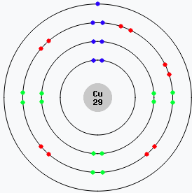

El coure i la conducció elèctrica

Per què el coure condueix l’electricitat?
El coure és un dels millors conductors d’electricitat, per això s’utilitza àmpliament en cables i instal·lacions elèctriques. Però, què fa que condueixi tan bé? Per entendre-ho, hem de conèixer com està format un àtom de coure i què fan els seus electrons.
Com s’organitzen els electrons?
Els electrons no giren aleatòriament al voltant del nucli, sinó que s’organitzen en capes o nivells d’energia. Cada capa pot allotjar un nombre màxim d’electrons:

1a capa: 2 electrons
2a capa: 8 electrons
3a capa: 18 electrons
4a capa: 32 electrons
5a capa: 50 electrons
6a capa: 72 electrons
7a capa: 98 electrons
2 + 8 + 18 + 32 + 50 + 72 + 98 = 280 electrons
En teoria, un àtom amb set capes podria contenir fins a 280 electrons. Però cap element conegut arriba a aquest límit. L’àtom més pesant descobert fins ara és l’oganessó (Z = 118), amb 118 electrons distribuïts en set capes.
Els àtoms i els elements
Tots els àtoms tenen protons al nucli. El seu nombre, anomenat nombre atòmic, determina de quin element es tracta. Comença amb l’hidrogen (Z = 1) i arriba fins a l’oganessó (Z = 118). Aquest nombre també indica quants electrons té un àtom neutre.

A la imatge veiem com es distribueixen els electrons dels 18 primers elements de la taula periòdica. L’hidrogen només té 1 electró a la primera capa, mentre que l’argó (Z = 18) en té 2 a la primera, 8 a la segona i 8 a la tercera.
Com afecta la distribució d’electrons?
Quan una capa s’omple, els electrons passen a la següent. Però molts elements tenen capes externes no plenes, i això afecta la seva reactivitat.
Els àtoms volen estabilitat, i per això guanyen, perden o comparteixen electrons per omplir completament la seva darrera capa. Aquest procés és la base de les reaccions químiques i de la formació d’enllaços entre àtoms.
- Els gasos nobles (heli, neó, argó...) tenen totes les capes plenes, són estables i gairebé no reaccionen.
- Altres elements, com el sodi o el clor, tenen capes incompletes i són molt més reactius.
El cas del coure
El coure té 29 electrons. Aquests s’organitzen en capes així: 2 a la primera, 8 a la segona, 18 a la tercera i 1 a la quarta.
L’electró més extern del coure és l’únic a la quarta capa. Està relativament poc lligat al nucli, i això fa que es pugui moure amb facilitat. Aquesta llibertat de moviment és la clau per a la seva excel·lent conductivitat elèctrica.
A la imatge, els electrons es representen en cercles concèntrics. És un model simplificat per mostrar com s’organitzen les capes, tot i que en realitat els electrons ocupen orbitals tridimensionals amb formes més complexes.
Electrons lliures i enllaços
Quan un electró de la capa més externa està sol, com en el cas del coure, pot desprendre’s fàcilment. Això el converteix en un electró lliure, que pot moure’s entre àtoms dins d’un metall.
Aquesta mobilitat permet que el corrent elèctric flueixi. Els àtoms del metall es converteixen en ions positius fixos, mentre que els electrons lliures es mouen com un núvol dins de la xarxa metàl·lica.

Altres materials, com el plàstic o la fusta, no tenen electrons lliures, i per això són aïllants. En canvi, els metalls com el coure condueixen molt bé l’electricitat.
Comparació amb altres metalls conductors
Altres metalls com la plata i l’alumini també són bons conductors. A continuació es compara el seu comportament amb el del coure:
| Propietat | Plata | Coure | Alumini |
|---|---|---|---|
| Conductivitat elèctrica | La més alta | Molt alta | Moderada |
| Durabilitat | Excel·lent | Excel·lent | Bona |
| Cost | Molt alt | Moderat | Baix |
| Pes | Alt | Mitjà | Molt lleuger |
| Ús habitual | Electrònica de precisió | Cables elèctrics, motors | Línies d’alta tensió |
Conclusió
- El coure té 29 electrons, amb un electró solitari a la quarta capa (4s¹).
- Aquest electró està poc lligat i es pot moure lliurement.
- Els electrons lliures permeten la conducció elèctrica.
- El coure combina alta conductivitat amb cost i durabilitat raonables.
- Per això és el metall més utilitzat per conduir electricitat.